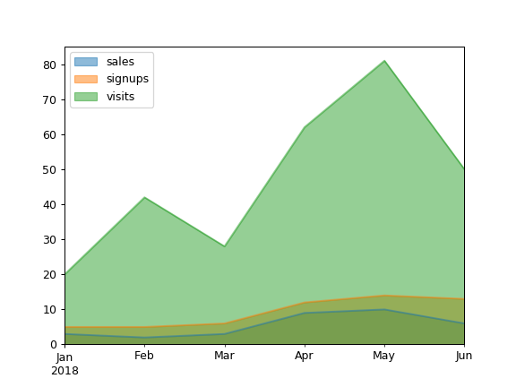

pandas.DataFrame.plot.area¶
-
DataFrame.plot.area(x=None, y=None, **kwds)[source]¶ Draw a stacked area plot.
An area plot displays quantitative data visually. This function wraps the matplotlib area function.
Parameters: - x : label or position, optional
Coordinates for the X axis. By default uses the index.
- y : label or position, optional
Column to plot. By default uses all columns.
- stacked : bool, default True
Area plots are stacked by default. Set to False to create a unstacked plot.
- **kwds : optional
Additional keyword arguments are documented in
pandas.DataFrame.plot().
Returns: - matplotlib.axes.Axes or numpy.ndarray
Area plot, or array of area plots if subplots is True
See also
DataFrame.plot- Make plots of DataFrame using matplotlib / pylab.
Examples
Draw an area plot based on basic business metrics:
>>> df = pd.DataFrame({ ... 'sales': [3, 2, 3, 9, 10, 6], ... 'signups': [5, 5, 6, 12, 14, 13], ... 'visits': [20, 42, 28, 62, 81, 50], ... }, index=pd.date_range(start='2018/01/01', end='2018/07/01', ... freq='M')) >>> ax = df.plot.area()

Area plots are stacked by default. To produce an unstacked plot, pass
stacked=False:>>> ax = df.plot.area(stacked=False)
Draw an area plot for a single column:
>>> ax = df.plot.area(y='sales')

Draw with a different x:
>>> df = pd.DataFrame({ ... 'sales': [3, 2, 3], ... 'visits': [20, 42, 28], ... 'day': [1, 2, 3], ... }) >>> ax = df.plot.area(x='day')